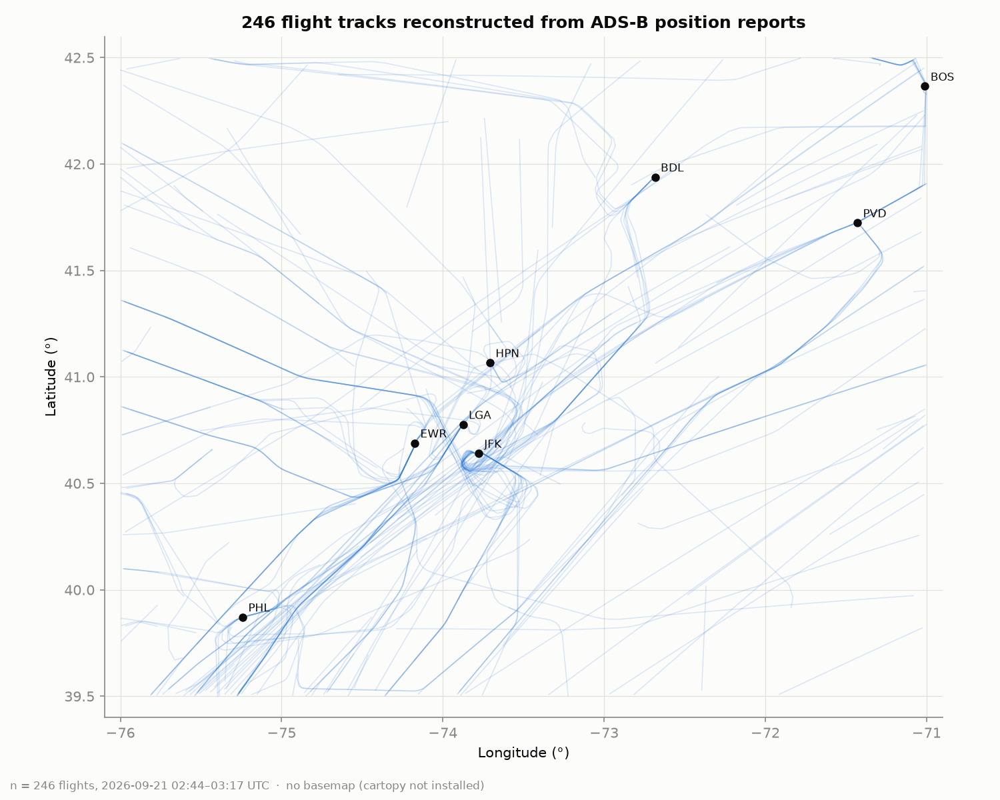
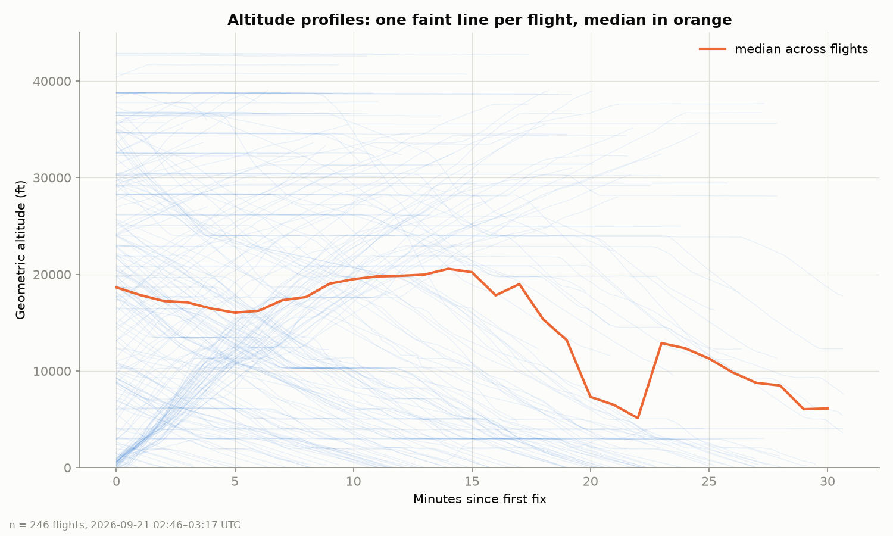
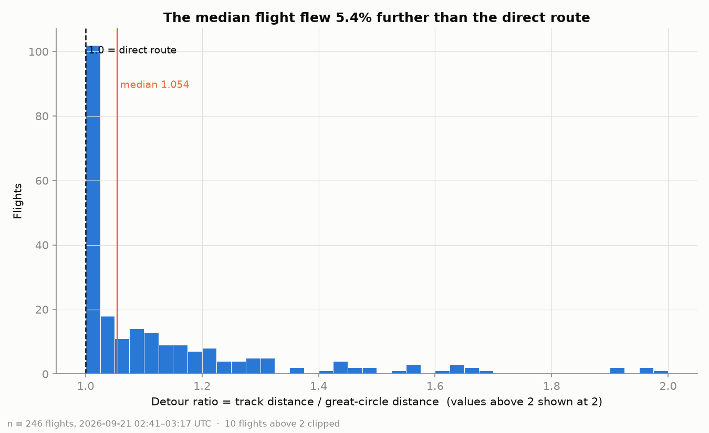
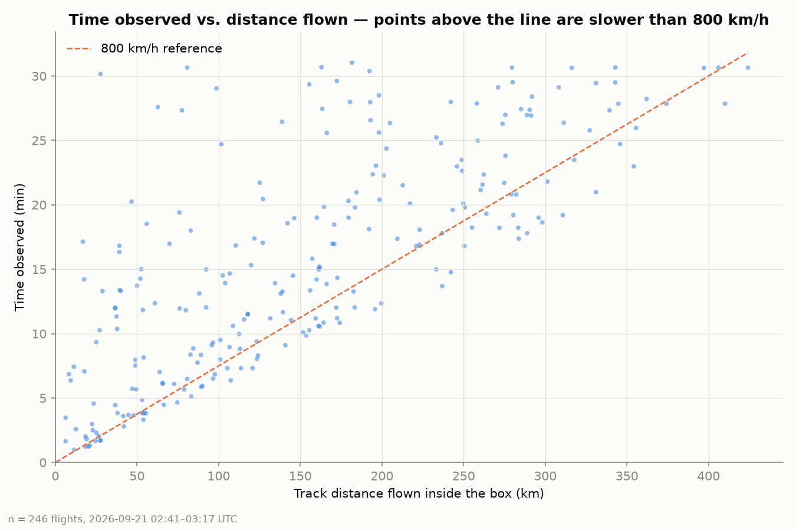
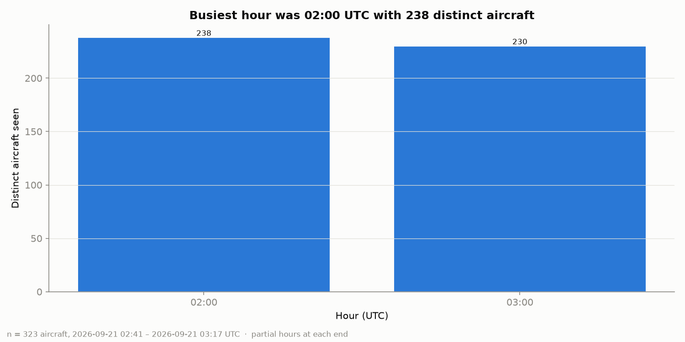
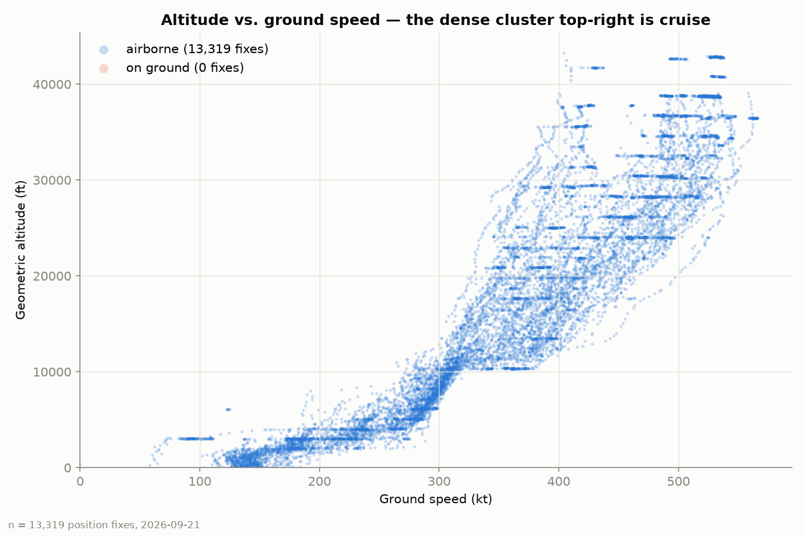

Flight Data Analyzer · ADS-B position reports
323 aircraft were broadcasting their position over the New York and New England corridor during one 36-minute collection. This page measures the ground each one actually covered against the straight line it could have flown.
The median flight covered 5.4% more ground than the great-circle route between the point it entered the box and the point it left — a median detour ratio of 1.054 across 246 flights. None of it is a wasted mile: that gap is what separation, published departure routes and approach sequencing cost in distance.
figures/flight_paths_map.png

figures/altitude_profiles.png

figures/detour_ratio_hist.png

figures/distance_vs_duration.png

figures/traffic_by_hour.png

figures/altitude_vs_speed.png

| Callsign | Operator country | Track km | Direct km | Ratio | Minutes | Fixes |
|---|---|---|---|---|---|---|
| RPA5840 | United States | 50 | 13 | 3.83 | 13.7 | 54 |
| JIA5289 | United States | 166 | 47 | 3.51 | 25.6 | 100 |
| ANA160 | Japan | 127 | 41 | 3.07 | 17.1 | 63 |
| JBU1128 | United States | 37 | 14 | 2.71 | 4.5 | 18 |
| TFF965 | United States | 49 | 21 | 2.34 | 8.0 | 32 |
| RPA4577 | United States | 53 | 23 | 2.29 | 15.0 | 40 |
| JBU1694 | United States | 142 | 63 | 2.25 | 18.6 | 73 |
| AAL177 | United States | 118 | 53 | 2.22 | 11.5 | 45 |
| AAL357 | United States | 88 | 41 | 2.16 | 13.1 | 53 |
| FFT4844 | United States | 83 | 40 | 2.06 | 18.0 | 58 |
Method
Five stages, each writing a file the next one reads. Collection is slow and irreplaceable; everything after it is fast and repeatable, so the charts can be redrawn without touching the API again.
Polls /states/all every 15 s and writes raw parquet. Filters nothing.
Types the columns, adds ft and kt, drops nothing row-wise.
Splits each aircraft's fixes into flights on a 30-minute gap.
Haversine track distance, great-circle distance, detour ratio.
Draws the six figures above. Recomputes nothing.
This page. Also recomputes nothing.